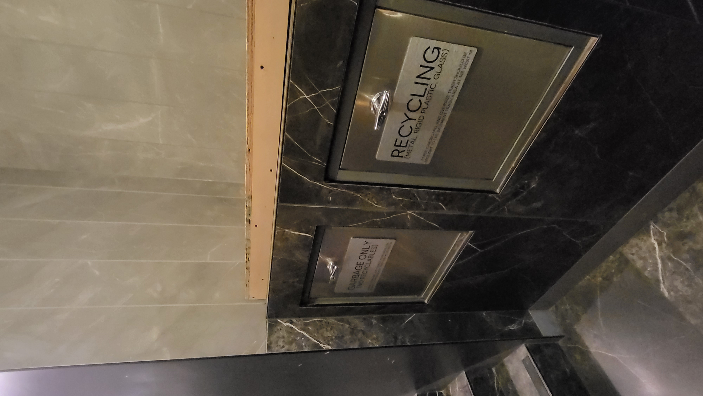

There are two ways to do laundry:
(1) Use the portable laundry machine in my bathroom.
(2) Use the laundry room outside the building.
üîë Keys
Key Pickup Method
If you lost key, use KEYME
This is a key duplication kiosk machine. If you ever lose your keys, you can make a duplicate key right here. You can find the location by searching "Keyme" on Google Maps. I recommend the one at the 24-hour Seven Eleven on 12th Street.
The cost ranges from $7 to $25.
To use the kiosk, simply press the login button and log in.
ID: kangj064@newschool.edu
Password: 147w14th
However, when making a copy, an authentication code will be sent to my email, so we need to be able to communicate for the duplication to be possible.
How to unlock the front door with a key:
Turn it to the right, then press it to the right again to open.
When leaving the house:
Turn the doorknob to the right until it opens.
Then, when leaving, turn the doorknob to the left. It should come out until the door locks automatically.
If your hands are slippery from lotion, it may be difficult to open the door. In that case, folding a tissue and using it to grip the doorknob will make it easier to open.
How to lock the door:
The door locks automatically.
How to open the mailbox:
Turn the key to the left.
When someone calls:
Press the right person-shaped button to have a conversation.
Press the left key button to open the door to the first floor.
üóëÔ∏è How to dispose of garbage:
You can throw it away on the first floor.
If it's something like a cardboard box, you can place it on top here.

How to open the window:
Turn it to the left to open and to the right to lock. Lower the upper window to open it.
Also, I cleared out the right storage cabinet for you. You can put your belongings in here!